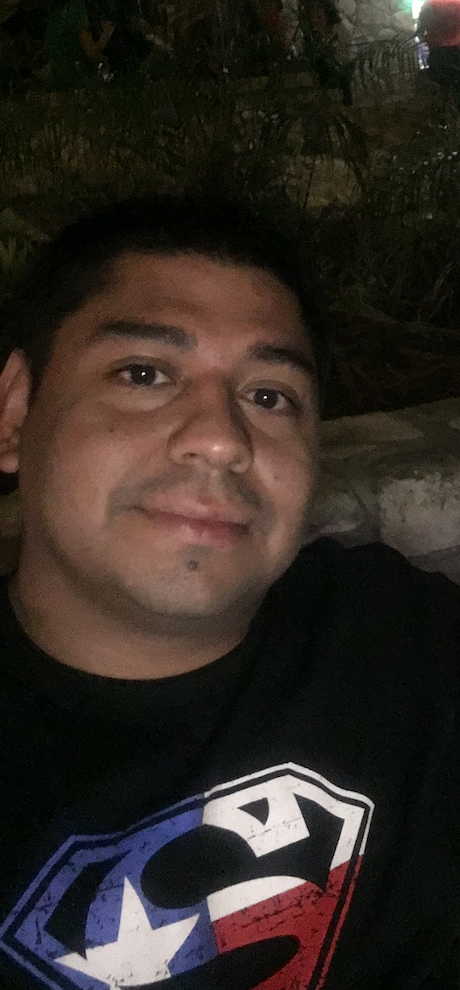

About Me
I'm 35 years old, recently married. We have 2 boys; the oldest is Bryan he is 9 years old, and the youngest, Alex, is 7 years old. I like to watch movies, play sports with my wife and sons, and play video games. My favorite color is
Blue. My two favorite sports are soccer and football. I have two favorite soccer clubs, Real Madrid and Chelsea. I've lived in Irving, Tx. all my life.
I have been a mechanic for 15 years, but the last two years I have been a diesel mechanic. I started working at a Volvo
when I was 21 years old, and It's been a long journey, but a change in careers will benefit me and my family.
Connect with Me